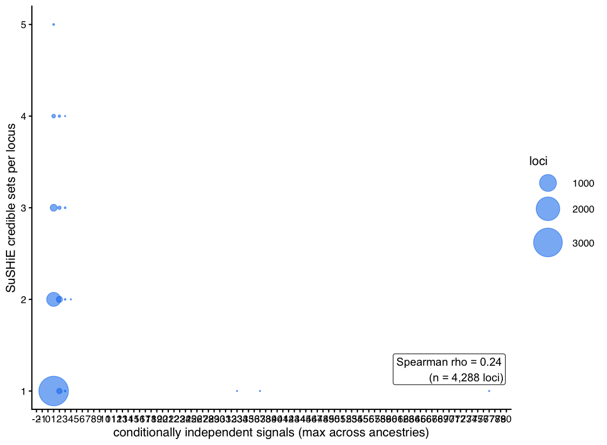

3 Cross-ancestry fine-mapping
3.1 Overview
SuSHiE jointly fine-maps each significant xQTL locus across ancestry strata, leveraging ancestry-specific LD to refine 95% credible sets and estimate cross-ancestry effect correlations. This report summarizes run diagnostics, credible-set properties, cross-ancestry concordance, top loci, and two complementary enrichment analyses: functional-annotation enrichment of high-PIP variants, and gene-set enrichment of high-confidence fine-mapped genes. A literature review of the top fine-mapped genes lives in the companion document
| Metric | Value |
|---|---|
| Loci attempted | 5,529 |
| Loci fine-mapped | 5,269 |
| Converged (min-tolerance) | 5,275 |
| Loci with >=1 credible set | 4,290 |
| Credible sets total | 6,347 |
| Single-variant credible sets | 2,330 |
| Loci fine-mapped in both ancestries | 4,508 |

3.3 Credible sets


3.3.1 Credible sets versus conditional signals
DevBrain Fig. 1I analog: the number of SuSHiE credible sets per locus versus the number of conditionally independent signals at the same phenotype (maximum rank across ancestries in the stepwise scans).

4,288 of 4,290 fine-mapped loci with credible sets matched a stepwise-conditional scan; the credible-set count tracks the conditional-signal count (Spearman rho = 0.24), cross-validating the two independence estimates.
3.4 Cross-ancestry concordance

The cross-ancestry effect-correlation distribution (n = 5,355 credible sets fine-mapped in both ancestries) centers at 1.00, quantifying how shared the causal effects are between strata.
3.5 Top loci
| modality | gene_symbol | phenotype_id | best_lead_pip | n_cs | min_cs_size | n_mod |
|---|---|---|---|---|---|---|
| RNA_editing | WSB1 | ENSG00000109046.15__chr17_27313055 | 1 | 2 | 1 | 6 |
| intron_retention | WSB1 | ENSG00000109046.15_IR_ENSG00000109046_chr17_27294436_27297186+_35681 | 1 | 1 | 1 | 6 |
| alt_TSS | SCARB2 | ENSG00000138760.11__grp_2_upstream_ENST00000638295.1 | 1 | 3 | 1 | 5 |
| RNA_editing | PGAP6 | ENSG00000129925.11__chr16_377516 | 1 | 1 | 1 | 4 |
| RNA_editing | CTSB | ENSG00000164733.23__chr8_11845033 | 1 | 3 | 1 | 4 |
| alt_TSS | MYL12B | ENSG00000118680.14__grp_1_upstream_ENST00000237500.10 | 1 | 1 | 1 | 4 |
| alt_TSS | MYL12B | ENSG00000118680.14__grp_1_upstream_ENST00000400175.9 | 1 | 1 | 1 | 4 |
| alt_TSS | CYP19A1 | ENSG00000137869.16__grp_1_upstream_ENST00000559646.1 | 1 | 3 | 1 | 4 |
| alt_polyA | PSCA | ENSG00000167653.5__grp_1_downstream_ENST00000513264.1 | 1 | 4 | 1 | 4 |
| alt_polyA | PSCA | ENSG00000167653.5__grp_2_downstream_ENST00000301258.5 | 1 | 4 | 1 | 4 |
| alt_polyA | PSCA | ENSG00000167653.5__grp_2_downstream_ENST00000513264.1 | 1 | 4 | 1 | 4 |
| alt_polyA | ELP5 | ENSG00000170291.16__grp_1_downstream_ENST00000574255.6 | 1 | 1 | 1 | 4 |
| alt_polyA | ELP5 | ENSG00000170291.16__grp_1_downstream_ENST00000574841.2 | 1 | 2 | 1 | 4 |
| alt_polyA | ELP5 | ENSG00000170291.16__grp_2_downstream_ENST00000574255.6 | 1 | 1 | 1 | 4 |
| expression | GBP3 | ENSG00000117226.12 | 1 | 1 | 1 | 4 |
| expression | GSTM3 | ENSG00000134202.12 | 1 | 1 | 1 | 4 |
| expression | GPNMB | ENSG00000136235.17 | 1 | 1 | 1 | 4 |
| expression | PSCA | ENSG00000167653.5 | 1 | 3 | 1 | 4 |
| isoform_expression | ERICH1 | ENSG00000104714.14__ENST00000523053.1 | 1 | 2 | 1 | 4 |
| isoform_expression | GBP3 | ENSG00000117226.12__ENST00000370481.9 | 1 | 1 | 1 | 4 |
| isoform_expression | MYL12B | ENSG00000118680.14__ENST00000400175.9 | 1 | 1 | 1 | 4 |
| isoform_expression | ENOSF1 | ENSG00000132199.20__ENST00000647584.2 | 1 | 1 | 1 | 4 |
| isoform_expression | GSTM3 | ENSG00000134202.12__HPLRT_ee030f104e3 | 1 | 1 | 1 | 4 |
| isoform_expression | GPNMB | ENSG00000136235.17__ENST00000258733.9 | 1 | 1 | 1 | 4 |
| isoform_expression | GPNMB | ENSG00000136235.17__ENST00000381990.6 | 1 | 1 | 1 | 4 |
| isoform_expression | GPNMB | ENSG00000136235.17__ENST00000409458.3 | 1 | 1 | 1 | 4 |
| isoform_expression | NAPRT | ENSG00000147813.16__HPLRT_d0e44f368b1 | 1 | 4 | 1 | 4 |
| isoform_expression | PSCA | ENSG00000167653.5__ENST00000301258.5 | 1 | 3 | 1 | 4 |
| isoform_expression | ELP5 | ENSG00000170291.16__ENST00000574255.6 | 1 | 1 | 1 | 4 |
| isoforms | MYL12B | ENSG00000118680.14__ENST00000237500.10 | 1 | 1 | 1 | 4 |
Top 30 fine-mapped loci (best credible-set lead PIP, ties broken by smallest credible set, then cross-modality recurrence of the gene; full table in tables_finemap/finemap_top_loci.tsv).
3.6 Functional-annotation enrichment of high-PIP variants
High-PIP variants (PIP >= 0.9) tested for enrichment against fastVEP consequence classes, ENCODE SCREEN cCRE classes, and placenta open-chromatin peaks; background = all other fine-mapped variants. Odds ratios and 95% CIs are recomputed from the 2x2 cell counts; FDR is Benjamini-Hochberg across classes.
## Enrichment table not found; run 34_pip_annotation_enrichment.py.3.7 Gene-set enrichment of high-confidence fine-mapped genes
Per-modality over-representation analysis of genes whose best credible
set resolves to a high-confidence causal variant (lead PIP >= 0.9),
against GO (BP/MF/CC), KEGG, MSigDB Hallmark, and the curated
pregnancy/placenta collection. Primary background: all fine-mapped genes
of the same modality (tests what distinguishes confidently resolved loci
among significant ones); sensitivity background: the HPLRv2 reference
universe. BH FDR within each modality x database x background. Computed
by run_finemap_enrichment.R; results read from cache.
## Gene-set enrichment cache not found; run run_finemap_enrichment.R.3.9 Methods summary
- Fine-mapping: SuSHiE joint cross-ancestry fine-mapping of the FDR-significant phenotype-level discovery set (ungrouped layer + expression primary scan), per-locus 95% credible sets with purity pruning, and cross-ancestry effect correlations (pipeline scripts 31-33).
- Variant-annotation enrichment: high-PIP variants (PIP >= 0.9) vs all other fine-mapped variants; fastVEP consequence classes, ENCODE SCREEN cCRE classes, placenta open-chromatin peaks; Fisher exact + PIP-weighted enrichment, BH FDR (script 34).
- Gene-set enrichment: per modality, genes with best-CS lead PIP >=
0.9 vs (a) all fine-mapped genes of the modality and (b) the HPLRv2
reference; clusterProfiler
enrichGO/enrichKEGG/enricher(Hallmark via msigdbr; curated pregnancy/placenta collection identical to the xQTL-mapping report); BH FDR within modality x database x background (run_finemap_enrichment.R). - Companion literature review:
literature_finemap.mdreviews the top fine-mapped genes against the published literature (pregnancy/birth outcomes, intragenomic conflict, placental biology).
3.10 Session info
## R version 4.4.1 (2024-06-14)
## Platform: aarch64-apple-darwin20
## Running under: macOS 26.7.1
##
## Matrix products: default
## BLAS: /Library/Frameworks/R.framework/Versions/4.4-arm64/Resources/lib/libRblas.0.dylib
## LAPACK: /Library/Frameworks/R.framework/Versions/4.4-arm64/Resources/lib/libRlapack.dylib; LAPACK version 3.12.0
##
## locale:
## [1] en_US.UTF-8/en_US.UTF-8/en_US.UTF-8/C/en_US.UTF-8/en_US.UTF-8
##
## time zone: America/Chicago
## tzcode source: internal
##
## attached base packages:
## [1] stats graphics grDevices utils datasets methods base
##
## other attached packages:
## [1] scales_1.4.0 ggprism_1.0.7 data.table_1.16.2 patchwork_1.3.2
## [5] ggplot2_4.0.2 stringr_1.6.0 tibble_3.3.1 purrr_1.2.1
## [9] readr_2.2.0 tidyr_1.3.2 dplyr_1.2.0
##
## loaded via a namespace (and not attached):
## [1] RColorBrewer_1.1-3 jsonlite_2.0.0 shape_1.4.6.1
## [4] magrittr_2.0.4 ggtangle_0.1.1 magick_2.9.1
## [7] farver_2.1.2 rmarkdown_2.30 GlobalOptions_0.1.3
## [10] fs_1.6.7 zlibbioc_1.52.0 ragg_1.5.1
## [13] vctrs_0.7.2 memoise_2.0.1 Cairo_1.7-0
## [16] RCurl_1.98-1.16 ggtree_3.14.0 htmltools_0.5.9
## [19] forcats_1.0.1 curl_7.0.0 gridGraphics_0.5-1
## [22] htmlwidgets_1.6.4 plyr_1.8.9 plotly_4.12.0
## [25] cachem_1.1.0 igraph_2.1.1 lifecycle_1.0.5
## [28] iterators_1.0.14 pkgconfig_2.0.3 Matrix_1.7-1
## [31] R6_2.6.1 fastmap_1.2.0 gson_0.1.0
## [34] GenomeInfoDbData_1.2.13 clue_0.3-67 digest_0.6.39
## [37] aplot_0.2.9 enrichplot_1.26.6 colorspace_2.1-2
## [40] AnnotationDbi_1.68.0 S4Vectors_0.44.0 textshaping_1.0.5
## [43] RSQLite_2.3.7 org.Hs.eg.db_3.20.0 labeling_0.4.3
## [46] httr_1.4.7 mgcv_1.9-1 compiler_4.4.1
## [49] bit64_4.5.2 withr_3.0.2 doParallel_1.0.17
## [52] S7_0.2.1 BiocParallel_1.40.2 DBI_1.2.3
## [55] R.utils_2.13.0 MASS_7.3-61 rappdirs_0.3.3
## [58] rjson_0.2.23 tools_4.4.1 otel_0.2.0
## [61] ape_5.8-1 R.oo_1.27.1 glue_1.8.0
## [64] nlme_3.1-166 GOSemSim_2.32.0 grid_4.4.1
## [67] cluster_2.1.6 reshape2_1.4.4 fgsea_1.32.4
## [70] generics_0.1.4 gtable_0.3.6 tzdb_0.5.0
## [73] R.methodsS3_1.8.2 hms_1.1.3 XVector_0.46.0
## [76] BiocGenerics_0.52.0 ggrepel_0.9.8 foreach_1.5.2
## [79] pillar_1.11.1 yulab.utils_0.2.4 vroom_1.7.0
## [82] circlize_0.4.17 splines_4.4.1 treeio_1.30.0
## [85] lattice_0.22-6 bit_4.5.0 tidyselect_1.2.1
## [88] GO.db_3.20.0 ComplexHeatmap_2.22.0 Biostrings_2.74.1
## [91] knitr_1.51 bookdown_0.46 IRanges_2.40.1
## [94] stats4_4.4.1 xfun_0.57 Biobase_2.66.0
## [97] matrixStats_1.4.1 stringi_1.8.7 UCSC.utils_1.2.0
## [100] lazyeval_0.2.2 ggfun_0.2.0 yaml_2.3.10
## [103] evaluate_1.0.5 codetools_0.2-20 qvalue_2.38.0
## [106] ggplotify_0.1.3 cli_3.6.5 systemfonts_1.3.2
## [109] dichromat_2.0-0.1 Rcpp_1.1.1 GenomeInfoDb_1.42.3
## [112] gprofiler2_0.2.4 png_0.1-8 parallel_4.4.1
## [115] blob_1.2.4 clusterProfiler_4.14.6 DOSE_4.0.1
## [118] bitops_1.0-9 viridisLite_0.4.3 tidytree_0.4.7
## [121] crayon_1.5.3 GetoptLong_1.1.0 rlang_1.1.7
## [124] cowplot_1.2.0 fastmatch_1.1-8 KEGGREST_1.45.1